一、实验原理：
FTP（File Transfer Protocol，文件传输协议） 是 TCP/IP协议组中的协议之一。FTP协议包括两个组成部分，其一为FTP服务器，其二为FTP客户端。其中FTP服务器用来存储文件，用户可以使用FTP客户端通过FTP协议访问位于FTP服务器上的资源。在开发网站的时候，通常利用FTP协议把网页或程序传到Web服务器上。此外，由于FTP传输效率非常高，在网络上传输大的文件时，一般也采用该协议。
默认情况下FTP协议使用TCP端口中的20和21这两个端口，其中20用于传输数据，21用于传输控制信息。但是，是否使用20作为传输数据的端口与FTP使用的传输模式有关，如果采用主动模式，那么数据传输端口就是20；如果采用被动模式，则具体最终使用哪个端口要服务器端和客户端协商决定。
二、实验目的：
探究FTP协议两种不同模式的流量特征，了解两种方式的工作原理。
三、实验内容：
搭建
首先，我们需要在自己的电脑上搭建FTP服务器，然后才能对其进行流量分析。
环境：win10
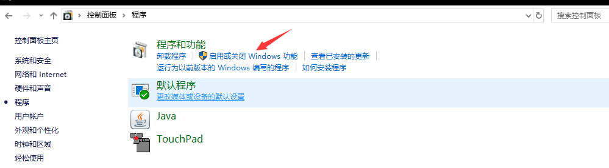
从这里启动window功能，打开FTP服务。
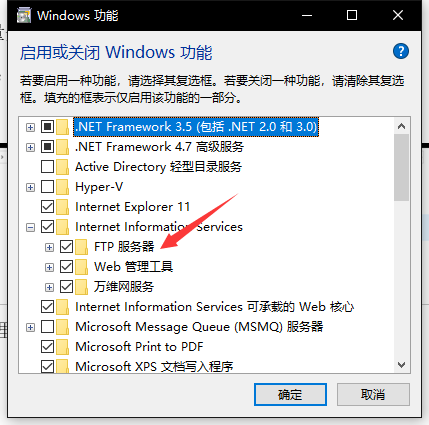
打开服务之后，在IIS服务器中进行设置。
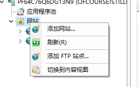
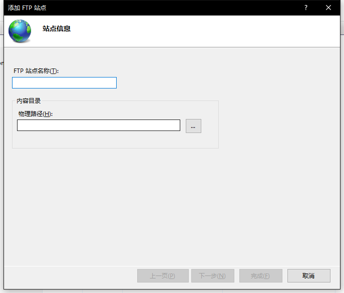
对你想要保存的FTP站点进行设置，主要是名称和物理路径。然后设置IP地址和端口。
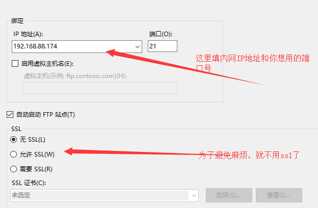
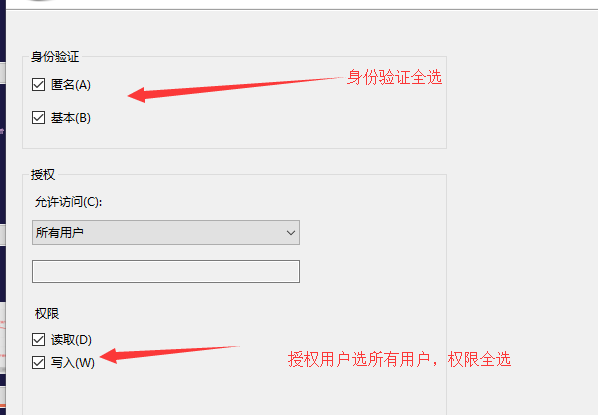
身份验证和权限我们为了方便访问直接全选。同时不给它设置SSL证书以方便抓取流量。
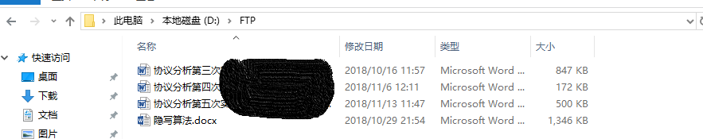
往物理地址中丢入一点东西。方便访问。
接下来我们尝试登陆。
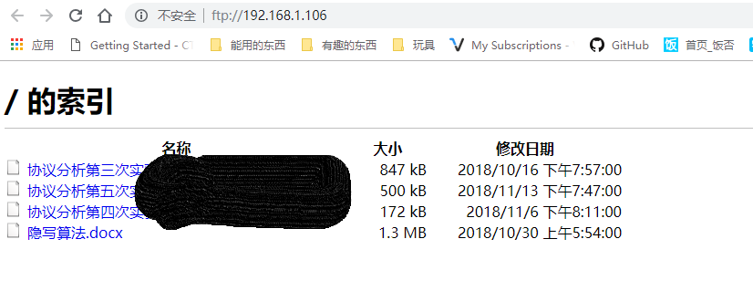
看起来我们已经搭建成功了。那么我们进入到下一步，对其流量进行分析。
流量分析
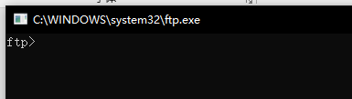
直接win+r中输入ftp打开ftp服务，接下来使用指令登陆ftp服务器。
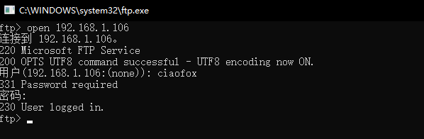
输入用户和密码登陆服务器（如果设置了匿名也可以直接登陆）。返回230。
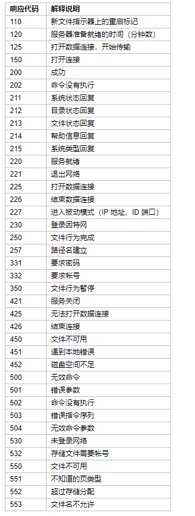
这是ftp协议的应答表，可以对应查看。
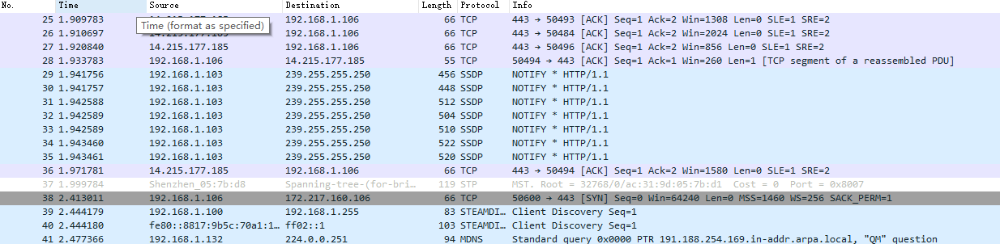
但是这时候我们查看wireshark的流量包，找不到对应的ftp流量。这是为什么呢？我本来以为因为ftp流量包含在tcp/ip协议中，所以着重去查看tcp协议，但是资料上说ftp协议全是明文，不应该这么难找。于是继续查阅资料。
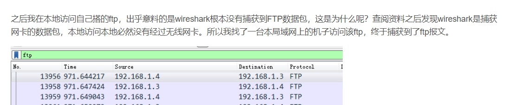
找到原因了。因为ftp访问本地根本不会通过网关。而wireshark抓取的是通过网关的流量，所以用wireshark抓取不到本地ftp服务器的流量。那我们可以尝试抓取别人的ftp流量或者在虚拟机中使用ftp服务器。在这里为了省事我们直接使用别人的ftp服务器。
这是登陆之后的界面。我们查看wireshark抓取到的流量包。/
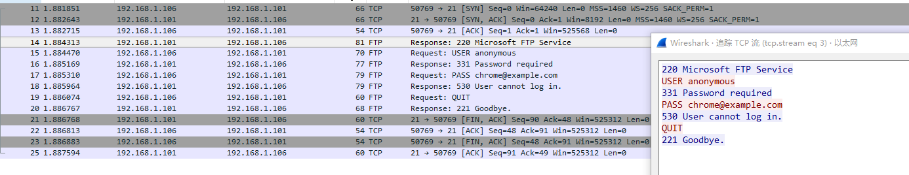
可以看到，经过tcp的三次握手之后，ftp包显示220，查阅对照表，这意味着服务器已经就绪。
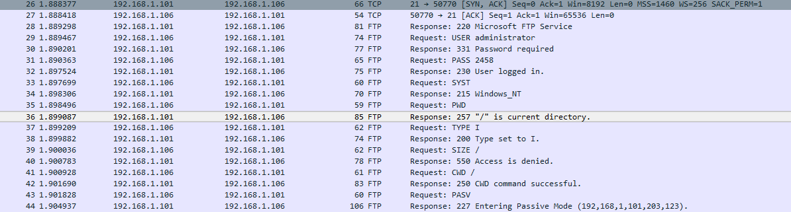
刷新页面之后，可以看出我们所有的流量都是明文可见，在这里我们归纳出ftp协议的第一个特征：所有流量明文可见，包括用户和密码。
Pwd指令的意思是直接显示当下目录所有的文件
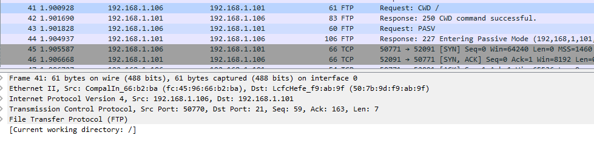
CWD意味着访问一个文件，下面返回的250表示文件行为已完成。在这里我们归纳出ftp协议的第二个特点：每个操作都会返回应答码。
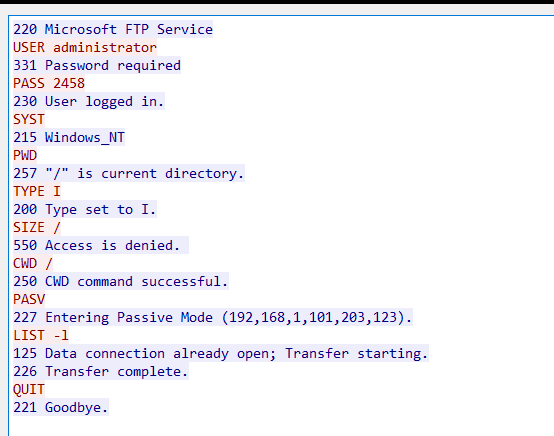
直接追踪流会看得轻松一些。接下来我们尝试下载某个文件。
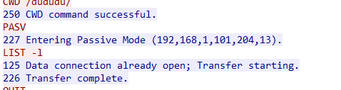
PORT模式，是客户端通过PORT命令告诉服务器端要使用的数据端口号，然后在客户端主动建立起这个端口的TCP/IP监听。在进行文件传输的操作时，服务器来连接客户端的这个数据端口，进行数据传输。
PASV模式，是客户端通过PASV命令来告诉服务器端，想使用PASV方式传输数据。服务器收到命令之后，主动在服务器端建立一个数据端口的TCP/IP监听，并把这个数据端口号返回客户端。在进行文件传输的操作时，客户端去连接服务器端的这个数据端口，进行数据传输。
表明了，这个客户机向服务器发送了监听，告诉服务器想使用pasv 的方式进行连接
服务器回答为进入主动的连接模式，表示要服务器主动跟客户机连接
接下来成功地接受了文件后退出
四、结果分析：
本次实验中我们归纳出了ftp协议的两个特征：
所有流量明文传输，包括账号和密码。
每次操作都会返回对应的应答码，需要查阅对照表才能明白。